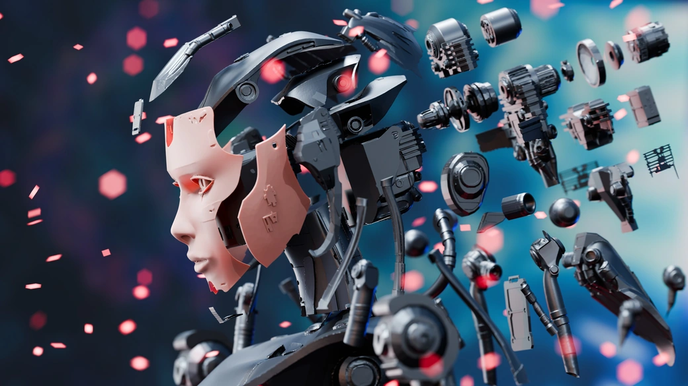
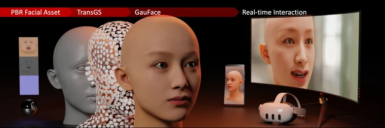
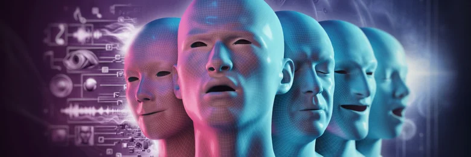
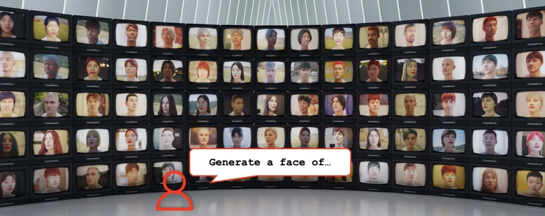

SIGGRAPH · ACM TOG · 2026
Strips as Tokens: Artist Mesh Generation with Native UV Segmentation

COMPUTER GRAPHICS & VISION
Ph.D. candidate / ShanghaiTech University
I study how we can create and understand the 3D world. My research spans generative 3D modeling, digital humans, and neural rendering.
I am a Ph.D. candidate at the Multidisciplinary Artificial Reality Studio (MARS), ShanghaiTech University, advised by Prof. Jingyi Yu and Prof. Lan Xu.
RESEARCH
SIGGRAPH · ACM TOG · 2026


SIGGRAPH · ACM TOG · 2025

SIGGRAPH · ACM TOG · 2025 Best Paper

IEEE TPAMI · 2025

SIGGRAPH · ACM TOG · 2024 Honorable Mention

SIGGRAPH Conference Papers · 2024


SIGGRAPH · ACM TOG · 2023

SIGGRAPH · ACM TOG · 2023

SIGGRAPH Real-Time Live! · 2023
SIGGRAPH Asia · ACM TOG · 2022

SIGGRAPH Asia · ACM TOG · 2022

SIGGRAPH · ACM TOG · 2022

B.Sc. in Computer Science and Technology
ShanghaiTech University
Occasionally, you’ll find me playing Dota 2.